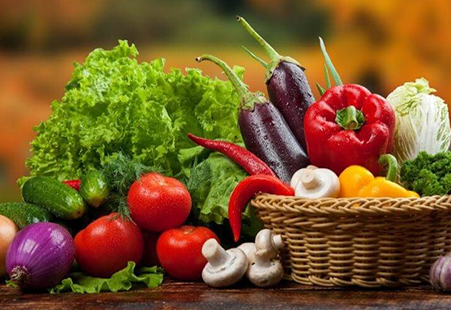

ESCOLHA DA SEMANA
ALIMENTAÇÃO
Uma semana mais leve começa com pequenas escolhas.
Organização sem perfeccionismo: um jeito simples de pensar nas refeições e abrir espaço para o que cabe na sua vida.
Ler a história